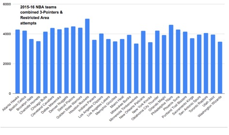
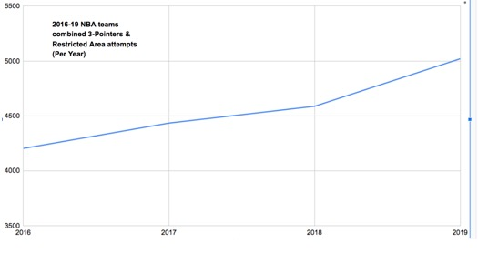

How The Houston Rockets Helped Revolutionize Today’s NBA Offense
I have always loved basketball. During the 2016–2019 seasons, the Houston Rockets greatly exceeded everyone’s expectations, and I wanted to understand why.
Kyle Schleifer
Department of Communications Studies University of Miami
JMM 309: Data Journalism
Professor Dominguez
April 2, 2020
In the last 5 years the Houston Rockets have taken enormous pride in their success of a revolutionary offensive system referred to as “Moreyball”. Despite their past regular season successes, the team had consistently fallen short of their goal of winning an NBA championship. When looking for explanations as to what may be the cause, the discussion has frequently been on their laser focus on taking an increased number of 3-pointers and layups, thus following the core belief of Moreyball. In doing so, the Rockets have completely strayed away from taking the once popular mid-range shot while increasingly focused on the most “efficient shot”. Contrary to this argument, I believe one of the main causes of the Rockets failure to win the championship lies in their opponent’s joining the strategy of taking more efficient shots, thus chipping away at the advantage the Rockets thought they would have.
To fully grasp the concept of Moreyball and understand the progression on taking more 3-pointers and layups one must examine the first year the Rockets hired the offensive-minded coach Mike D’Antoni under Daryl Morey. The new general manager decided the team had to have a focus on layups and 3-pointers and constructed the roster and hired a coach accordingly. Using data provided by “NBA Statistics”, I determined that the 2015-16 Rockets led the league in combined attempts from the 3-point line and the restricted area. The Houston Rockets led the NBA league average (4023 combined attempts), by a widespread margin of 1002 attempts. The team also set a new NBA high in the combined attempts from the restricted and the 3-point arc with 5030 combined attempts. At this time, the majority of people did not believe in the importance of the math. Various NBA analysts, teams, and players dismissed the idea of turning their backs on the midrange, and made light of the Rockets’ efforts to elevate their layup and 3-point attempts. Despite this, according to the Moreyball theory, the Rockets taking the most amount of shots from these two most efficient areas, would give the team the highest math advantage over the rest of the league. In support of this statistic, the 2015-16 Houston Rockets made it to the playoffs before being eliminated in the first round by the Golden State Warriors, losing the series (1-4).

During the 2016-17 NBA season, the league average of combined shot attempts increased substantially with 4434 attempts. In addition to the league average surplus in Moreyball shots, the Rockets combined attempts increased considerably with 5834 attempts. Houston’s commitment to Moreyball not only gave them improved success in the playoffs, but it assisted them in having the 10th highest offensive efficiency in the history of the league. As a result of staying true to their roots, the 2016-17 Houston Rockets improved to the Semi-Finals before being eliminated by the San Antonio Spurs, (2-4).
As NBA teams started to buy into the math of increasingly taking shots from the two most efficient shots, not surprisingly, the league average began to steadily rise. Using the Data provided by “NBA Statistics” I determined that after the 2016-17 season, the Rockets’ opponents slowly started to close the distance with the amount of combined attempts in field goals within the restricted area and 3-point range. Looking at the 2017-18 NBA season, the league average of combined shot attempts jumped a significant amount to 4587 attempts. In correspondence with this trend, the Rockets unsurprisingly decided to keep on a similar pace from last year’s shot attempts, by taking 5659 combined attempts. The Rockets again placed themselves within NBA history, posting the 11th highest offensive efficiency. That year, however, the Rockets improved in taking efficient Moreyball shots to match the rate at which they were shooting these shots. The Rockets placed second in the league in field goal percentage in the restricted area shots, shooting a 64.6 percent clip and placed within the top 40 percent of the league, shooting 35.9 percent from the three point line. Following their pattern of increased playoff success with increasing their Moreyball shots, the Rockets reached new heights, finishing first place in the regular season and making it all the way to the Western Conference Finals, before losing to the loaded Golden State Warriors (3-4).

Not surprisingly, with the Rockets achieving both playoff success and offensive efficiency, other NBA teams continued to increase their amounts of Moreyball shots per game. The former advantage their offensive system once carried shrunk even further when more teams adopted their system. The 2018-19 NBA season once again resulted in the Rockets surpassing their previous years total of Moreyball shots with 5874, however, this year was different. It might appear that the Rockets overused the 3-point shot. That year the team shot 3708 3-pointers, which was 585 more attempts than the second leading team, the Milwaukee Bucks, with 3123 attempts. Of the attempted 3 point shots, the Rockets had a 35.5 percent success rate compared to a 36.3 percent rate the previous year. Additionally, the league’s average of combined shot attempts jumped to a substantial amount of 5020 attempts, thus taking the magic out of Morey’s once revolutionary system for the Rockets. The increase of the league average Moreyball attempts per game not only took a toll on the Rockets’ offensive numbers, but also resulted in a worst postseason result. The Rockets finished the year 4th in the West and again fell short of their championship goal, being eliminated in the Western Semi Finals to the Golden State Warriors (2-4).
In the future, it seems likely that NBA teams will continue to increase their amount of Moreyball shots taken per season, although not necessarily at the same rapid increase as was seen in past years. The math supports that the once popular midrange shot will continue to become less of a part of NBA offenses, with newfound importance given to shot efficiency. Over the 2015-19 seasons, the Houston Rockets attempted 27,375 shots in the restricted area and the 3-point line combined. This amount of combined attempts not only led the NBA, but was 3,291 more attempts than the second leading Atlanta Hawks’, 24,084 attempts. For the Rockets’ future, the team will hopefully find a new mathematical edge over their opponents, while not necessarily tweaking their offense. Moving forward, the Rockets should potentially look into structuring their team and playing style with more of a focus on the defense side of basketball while possibly starting a new trend for teams to emulate.